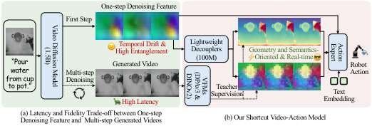
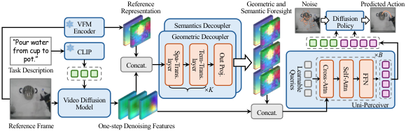
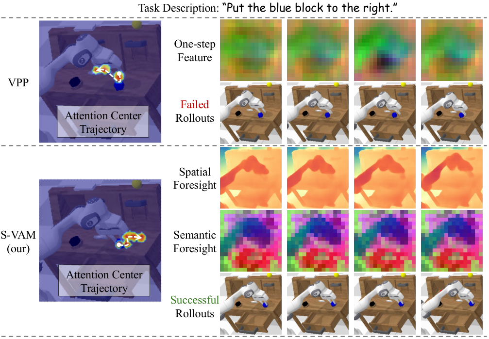
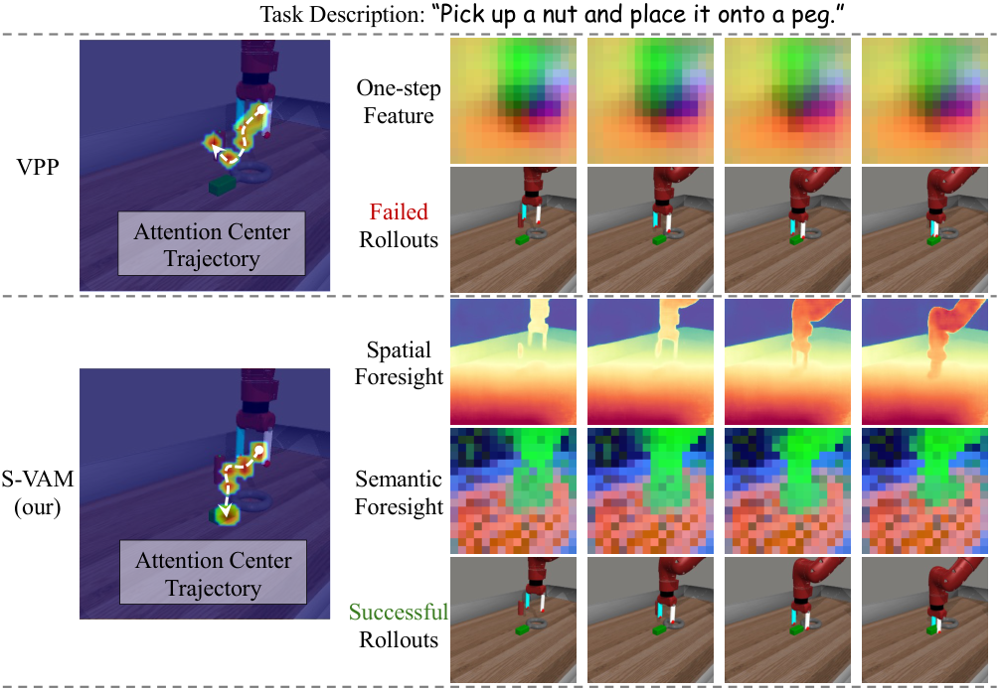
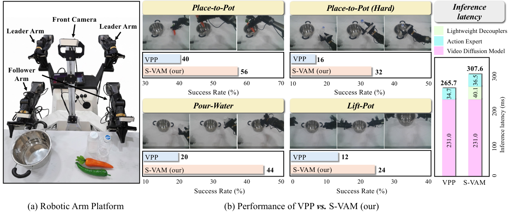

S-VAM: Shortcut Video-Action Model by Self-Distilling Geometric and Semantic Foresight
1. 论文速览
难度评级：★★★★☆。需要理解 VLA/VAM、Stable Video Diffusion、扩散模型去噪特征、Vision Foundation Model 表征、token condensation/QFormer/Perceiver，以及 diffusion policy。
关键词：Video-Action Model, Self-Distillation, Geometric Foresight, Semantic Foresight, Vision Foundation Models, Diffusion Policy。
| 阅读定位问题 | 答案 |
|---|---|
| 论文要解决什么 | 现有 VAM 要么依赖慢速 multi-step video generation，要么使用 noisy one-step diffusion features，难以同时满足实时控制和高质量未来预见。 |
| 作者的方法抓手 | 用 diffusion model 自己多步生成的视频抽取 VFM teacher targets，再训练 lightweight geometric/semantic decouplers 从单步 denoising features 直接预测这些 teacher representations。 |
| 最重要的结果 | CALVIN 平均序列长度 4.16，MetaWorld 平均成功率 72.8%；真实双臂 Cobot 四任务上优于 VPP，且 action chunk 为 8 时有效控制频率 25 Hz。 |
| 阅读时要注意的点 | 核心不是简单把 VFM 特征拼到策略里，而是 teacher target 来自同一 diffusion trajectory 的 multi-step generated videos，避免 GT future frames 与 one-step features 的轨迹错配。 |
核心贡献清单
- 提出 S-VAM shortcut。绕过 iterative video generation 的推理延迟，用单次 denoising forward pass 获得可用于控制的未来表征。
- 提出 geometric/semantic foresight self-distillation。用 DPAv3 和 DINOv2 从 SVD 多步生成视频中抽取 teacher representations，监督 decouplers 学会从 noisy one-step features 中恢复结构化 foresight。
- 提出 Uni-Perceiver action expert 条件聚合。把几何、语义和原始扩散特征压缩成 compact tokens，作为 diffusion policy 的条件。
- 在仿真和真实机器人验证。覆盖 CALVIN、MetaWorld 和 AgileX Cobot 真实双臂任务，并提供组件消融和 VFM teacher target 消融。
2. 动机
2.1 要解决什么问题
VLA 模型通常把预训练 VLM 接上 action head，再用机器人动作数据微调。问题是，VLM 主要来自静态图文预训练，本身不具备物理交互所需的 spatiotemporal foresight；如果完全依赖机器人动作数据学习动态规律，数据成本很高。
VAM 路线试图用 video diffusion model 产生 visual plan，再让 action expert 根据视觉计划预测控制。这样可以利用互联网视频中的动态先验，减少对机器人动作数据的依赖。

2.2 已有方法的局限
- Multi-step video generation：多步去噪能产生较高保真视觉未来，但推理延迟高，不适合实时控制。
- One-step feature extraction：单步扩散特征速度快，但特征 noisy 且 entangled，难以稳定表达几何结构、对象语义和未来交互。
- 直接动作学习：不显式引入视频模型动态先验，需要从有限机器人数据中学习物理动态。
- 用 GT future frames 做蒸馏：论文消融指出，GT future frames 与 one-step diffusion features 不在同一生成轨迹上，会造成 trajectory misalignment，性能从 4.16 降到 3.82。
2.3 本文的解决思路
本文把“慢速多步生成视频中的稳定结构化表征”当作 teacher，把“快速单步 denoising features”当作 student 输入。几何分支学习 DPAv3 表征，语义分支学习 DINOv2 表征。推理时不再跑完整多步视频生成，只需要一次 denoising feature extraction 加 decouplers，就能得到可供动作专家使用的 geometric and semantic foresight。
4. 方法详解
4.1 方法概览
S-VAM 的 pipeline 是：输入当前观察 $I$ 和任务描述 $P$；SVD 在第一步 denoising 时抽取多层 up-sampling features；geometric decoupler 和 semantic decoupler 分别把这些 noisy/entangled features 解耦为 DPAv3-like 和 DINOv2-like future representations；Uni-Perceiver 把两类 foresight 与原始 diffusion feature 聚合为 compact tokens；diffusion policy 根据这些 tokens 和文本 embedding 输出动作序列。

4.2 方法演变脉络
| 阶段 | 形式 | 改进动机 |
|---|---|---|
| Direct VLA | 当前图像/语言直接到动作。 | 缺少显式 spatiotemporal foresight，机器人数据需求高。 |
| VAM with multi-step video generation | 视频扩散模型多步生成未来视觉计划，再预测动作。 | foresight 高保真，但 multi-step denoising 推理慢。 |
| One-step VAM | 用单步扩散内部特征指导动作。 | 实时性好，但特征 noisy/entangled。 |
| S-VAM | 把多步生成视频的 VFM representations 自蒸馏到单步特征。 | 保留单步效率，同时获得更稳定的几何/语义未来表征。 |
4.3 核心设计与数学推导
4.3.1 Stable Video Diffusion 基础
$z_s$ 是第 $s$ 步 latent，$\epsilon_\theta$ 是噪声预测网络，条件为观察帧 $I$ 和任务描述 $P$。S-VAM 不在控制时完整执行多步采样，而是使用第一步 denoising features。
4.3.2 VFM teacher target
$\hat{V}$ 是 SVD multi-step generated video；$\Phi$ 是 frozen VFM encoder；插值用于对齐空间分辨率。论文使用 DPAv3 作为 geometric teacher、DINOv2 作为 semantic teacher。
4.3.3 One-step denoising feature 聚合
$F_l$ 是第 $l$ 个 up-sampling layer 的 feature map，$C_\Sigma=\sum_l C_l$。这些特征快，但本身 noisy 和 entangled。
4.3.4 Geometric/Semantic decouplers
$\mathcal{S}$ 和 $\mathcal{T}$ 分别是 spatial 和 temporal transformer layers。每个分支最后投影回对应 VFM 维度。
论文强调，teacher 来自同一 diffusion trajectory 的 generated videos，避免用 GT future frames 造成 trajectory misalignment。
4.3.5 Uni-Perceiver 与 diffusion policy
$\mathcal{Q}$ 是 $N$ 个 learnable latent queries。Cross-attention 从高维 spatiotemporal context 中抽取信息，self-attention 建模 compact tokens 内部关系。
$a_j$ 是 diffusion timestep $j$ 的 noisy action，$E$ 是任务文本 embedding，$\epsilon_\phi$ 是动作噪声预测网络。
4.4 实现要点
5. 实验
5.1 实验设置
| 项目 | 设置 |
|---|---|
| CALVIN | ABC→D：在 ABC 环境训练，在 unseen D 环境评估，考察连续 long-horizon tasks 泛化。指标为第 $i$ 个任务成功率和 Avg. Len. |
| MetaWorld | 50 个 Sawyer manipulation tasks，按 Easy/Middle/Hard 统计。训练集每任务 50 demonstrations。 |
| 真实机器人 | AgileX Robotics Cobot 双臂平台，Mobile ALOHA design；每臂 7 DoF 和 parallel gripper；仅使用 front camera monocular RGB observations。 |
| 真实任务 | Place-to-Pot、Place-to-Pot (Hard, transparent object)、Pour-Water、Lift-Pot。统一 multi-task model，每任务约 50 human demonstrations，评估每任务 25 trials。 |
| Baselines | Direct action learning：RT-1、Diffusion Policy、OpenVLA、CLOVER、$\pi_0$、Spatial Forcing；Predictive methods：SuSIE、VPP、GR-1、Uni-VLA、HiF-VLA 等。 |
| 代码仓库 | 项目页提供官方代码：https://github.com/Haodong-Yan/S-VAM-Code。 |
5.2 主要结果
CALVIN
| Method | 1st | 2nd | 3rd | 4th | 5th | Avg. Len. |
|---|---|---|---|---|---|---|
| Spatial Forcing | 93.6 | 85.8 | 78.4 | 72.0 | 64.6 | 3.94 |
| VPP | 90.9 | 81.5 | 71.3 | 62.0 | 51.8 | 3.58 |
| Uni-VLA | 95.5 | 85.8 | 74.8 | 66.9 | 56.5 | 3.80 |
| HiF-VLA | 93.5 | 87.4 | 81.4 | 75.9 | 69.4 | 4.08 |
| S-VAM | 95.8 | 90.7 | 83.7 | 77.0 | 68.9 | 4.16 |
论文强调 S-VAM 比直接 baseline VPP 高 0.58 Avg. Len.。定性图中，VPP 的 one-step entangled features 产生偏离指令的 attention trajectory；S-VAM 的 decoupled foresight 使 attention trajectory 与语言指令更一致。

MetaWorld
| Method | Easy | Middle | Hard | Average |
|---|---|---|---|---|
| Spatial Forcing | 0.737 | 0.436 | 0.451 | 0.609 |
| HiF-VLA | 0.729 | 0.364 | 0.404 | 0.577 |
| VPP | 0.818 | 0.493 | 0.526 | 0.682 |
| S-VAM | 0.793 | 0.607 | 0.684 | 0.728 |
S-VAM 平均成功率 72.8%，Hard tasks 为 68.4%，论文称其在 hard tasks 上显著超过 VPP 的 52.6%。作者把优势归因于 decoupled geometric/semantic foresight 能在复杂物体交互和精细几何约束中提供更稳定的目标定位。

真实机器人

真实实验的关键细节：每任务约 50 demonstrations，25 trials。Place-to-Pot (Hard) 涉及透明物体，VPP 成功率 16%，S-VAM 提升到 32%。论文解释为 geometric decoupler 有助于透明表面的深度歧义，semantic decoupler 有助于保持透明物体的一致表征。
5.3 消融实验
| Variant | 1st | 2nd | 3rd | 4th | 5th | Avg. Len. | 目的 |
|---|---|---|---|---|---|---|---|
| w/o Geometric Distillation | 94.1 | 87.1 | 79.3 | 73.5 | 66.5 | 4.01 | 验证几何 foresight 作用。 |
| w/o Semantic Distillation | 94.0 | 87.1 | 80.4 | 73.2 | 64.1 | 3.99 | 验证语义 foresight 对对象身份一致性的作用。 |
| w/o Self-Distillation | 94.2 | 85.2 | 75.9 | 67.8 | 59.0 | 3.82 | 用 GT future frames 替代模型自生成视频 teacher。 |
| w/o Uni-Perceiver | 94.0 | 84.6 | 74.7 | 65.1 | 53.8 | 3.72 | 验证 compact token condensation 的必要性。 |
| w/o Original Diffusion Feature | 95.3 | 86.6 | 77.6 | 70.9 | 62.5 | 3.93 | 验证原始扩散特征提供 residual global context。 |
| S-VAM Full | 95.8 | 90.7 | 83.7 | 77.0 | 68.9 | 4.16 | 完整模型。 |
5.4 补充实验：VFM teacher target 选择
| Type | Representation | Avg. Len. | 论文解释 |
|---|---|---|---|
| Semantic | CLIP / SigLIP | 3.72 / 3.77 | global semantics 有场景级信息，但对低层控制的 dense patch-level affordance 不足。 |
| Semantic | DINOv2 / DINOv3 | 4.01 / 3.95 | dense patch-level 表征优于 CLIP/SigLIP。 |
| Geometric | DPAv3 / VGGT | 3.99 / 3.74 | DPAv3 适应 dynamic video streams；VGGT 偏 static scene reconstruction。 |
| Motion-aware | VideoMAEv2 / V-JEPA2 | 3.90 / 3.74 | 作者认为当前视频模型在 fine-grained feature fidelity 上仍弱于专门图像模型。 |
| Synergistic | SigLIP+DPAv3 / DINOv2+VGGT / DINOv2+DPAv3 | 4.06 / 4.04 / 4.16 | DINOv2 的 dense semantics 与 DPAv3 的 dynamic geometry 互补。 |
6. 分析与讨论
6.1 论文已给出的结果分析与解释
- CALVIN 中，作者把 S-VAM 相对 VPP 的优势归因于 decoupled geometric and semantic foresight 能形成更连贯、与语言指令一致的 attention trajectory。
- MetaWorld hard tasks 中，作者认为复杂物体交互和精细几何约束更需要动态几何与 dense semantic foresight。
- 真实透明物体任务中，作者明确解释：geometric decoupler 缓解透明表面的 depth ambiguity，semantic decoupler 维持透明物体的一致对象表征。
- VFM target 消融中，作者解释 DINOv2 优于 CLIP/SigLIP 是因为 dense patch-level 表征更适合低层控制；DPAv3 优于 VGGT 是因为 DPAv3 面向动态视频流。
6.2 作者自述的局限性
源码中的 Conclusion 没有显式列出 limitation 或 failure cases，也未提供独立 appendix。因此本报告不额外加入报告撰写者的主观局限。可复现性层面的缺口仅在 §6.4 中按论文已公开信息列出。
6.3 论文中明确写出的适用边界与讨论
- S-VAM 的 teacher target 依赖 SVD 自己的 multi-step generated videos；如果视频生成 backbone 对某类场景不能产生稳定未来，self-distilled teacher 也会受影响。该点是从方法机制推出的适用前提，不是作者单独列出的实验局限。
- 真实实验只使用 front-camera monocular RGB observations，并在 4 个双臂任务上验证。
- 实时控制结论基于 action chunk 长度 8、RTX 3090 推理、307.6 ms forward pass 的设置。
6.4 可复现性审计
| 项目 | 状态 | 说明 |
|---|---|---|
| 源码结构 | 已获取 | arXiv e-print 包含 main.tex、secs/、bib、style 和 PDF figures。 |
| 图表 | 已提取 | 所有 PDF 图已转换为 PNG 并放入 figures/。 |
| 代码仓库 | 已找到 | 项目页链接到 Haodong-Yan/S-VAM-Code。 |
| 训练配置 | 部分完整 | 论文给出三阶段训练步数和 GPU 配置，但未在 LaTeX 中列出 batch size、learning rate 等完整超参数表。 |
| 数据设置 | 主要信息明确 | CALVIN、MetaWorld、真实 Cobot demos/trials 均有说明。 |
| 附录 | 无独立附录 | 源码中未发现 appendix，因此没有额外证明、失败案例或完整超参数附录可整合。 |